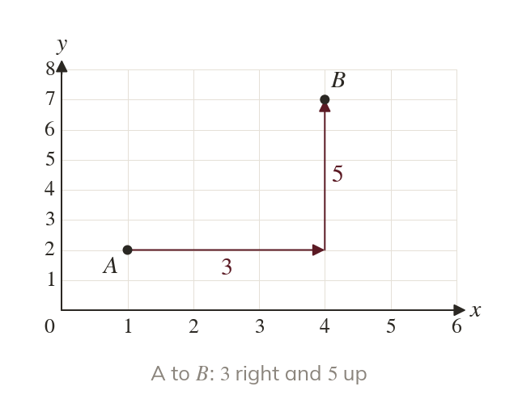
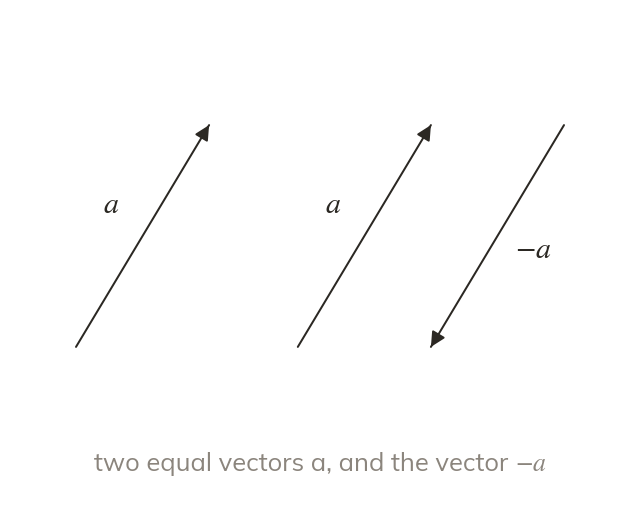
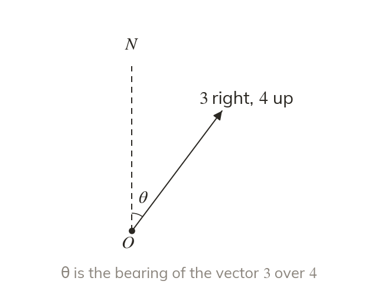
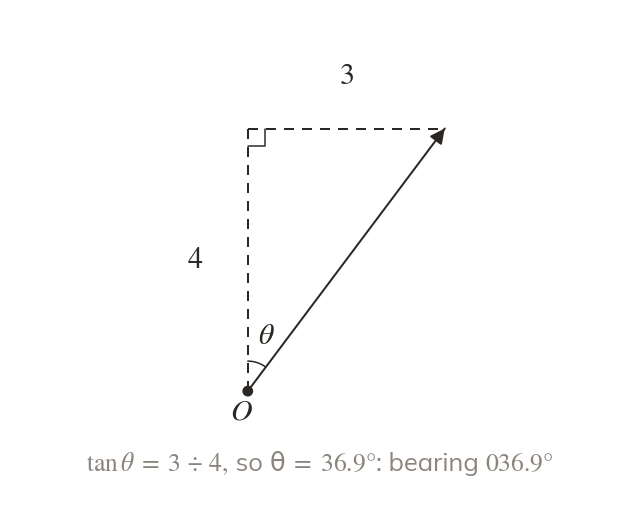

Size and direction together
A vector has a size and a direction. A column vector gives the move: across on top, up below.
A pilot needs more than a speed: the plane must also head the right way. A vector carries both, a size and a direction, and today we write vectors down, measure them and find their bearings.
Work down the page at your own pace. Write every answer in your book first, then click to check it.
Read each card, then follow the worked examples one step at a time.

A vector has a size and a direction. A column vector gives the move: across on top, up below.

Equal vectors have the same size and direction, wherever they are drawn. Reversing the direction changes every sign: BA→ = -AB→.
Pick an answer. If it's wrong, the feedback tells you which mistake it was.
Read each card, then follow the worked examples one step at a time.

A bearing is measured clockwise from north. On a grid, north is straight up.

The components are the two short sides of a right-angled triangle. Inverse tan gives the angle from north.
Pick an answer. If it's wrong, the feedback tells you which mistake it was.
Finished? Next lesson: 11H.8.2 Scalar Multiples and Parallel Vectors.
Log in, then search for a code to practise that skill.
Videos, worksheets and more on each part of this lesson.